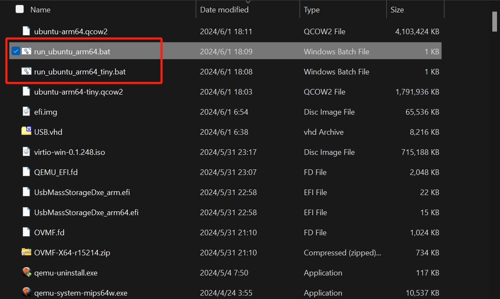

1 基础背景
QEMU（Quick Emulator）是一种特殊的虚拟化类型，可以在一台物理机器上创建多个虚拟机，但这些虚拟机可以与宿主机同架构，也可以不同架构。当架构相同的时候，可以将QEMU看作是虚拟机；当架构不同的时候，可以兼顾QEMU看作是模拟器。比如宿主机是amd64（x86_64），那么虚拟机也可以是amd64（x86_64，64位），也可以是x86（32位），还可以模拟出aarch64（arm64）、arm（32位）、mips等等架构。
在没有硬件辅助的情况下，QEMU可以进行全虚拟化（Full Virtualization），通过二进制翻译来模拟整个硬件环境，使得在一个物理机器上可以运行多个不同的操作系统。
QEMU原生只有字符界面，但本文所用的命令和文件都是现成的 ，而且大家可以使用AI联网来检索具体配置参数的意义和效果等等，所以完全不用怕。
2 下载安装
下载安装QEMU需要访问官方网站。
本文也提供了一份适用于Windows系统的绿色版本QEMU9.0，下载链接 , 提取码：wy0d 。
不过下载安装之后倒未必能够直接使用，因为现在的操作系统往往需要efi分区等等要素。
那本文这里也提供了一份能够很好地支持上述版本QEMU的efi.img文件，下载链接 , 提取码：olfy 。
这个efi.img文件可以用于启动QEMU，也可以用于启动QEMU创建的虚拟机。
3 创建虚拟机
有了QEMU软件，也有了efi.img文件，就可以创建虚拟机了。
首先使用QEMU自带的使用qemu-img命令来创建新的空白镜像：
# 创建压缩的qcow格式
qemu-img create -f qcow2 ubuntu-arm64.qcow2 120G
# 创建通用的img格式
qemu-img create ubuntu-arm64.img 120G
上述命令会创建一个120GB的空白镜像文件，可以在这个镜像上安装操作系统。
如果有vhd或者img之类的其他格式的虚拟硬盘，QEMU可以直接使用，也可以转换成为qcow2。
可以使用qemu-img命令来进行转换：
qemu-img convert -f vhd -O qcow2 /path/to/your/vhd/file /path/to/your/qcow2/file
qemu-img convert -O qcow2 -c ubuntu-arm64.img ubuntu-arm64-compressed.qcow2
QEMU自带了包括qemu-system-x86_64、qemu-system-arm（32位）和qemu-system-aarch64（64位）等很多个命令，都是对应各自的虚拟架构的。在使用这些命令创建和运行虚拟机的时候，还需要添加适当的CPU和机器模型参数，以及网卡显卡设置等等信息。
例如下面的例子中，已经有从Ubuntu官网下载好的ubuntu-24.04-live-server-arm64.iso这个操作系统安装镜像，还有一个本项目提供好的efi.img以及上面创建好的ubuntu-arm64.img文件。
下面的命令就是将操作系统安装到对应的虚拟磁盘：
# 运行系统盘来安装
# Ubuntu Arm 64
qemu-system-aarch64 -M virt,virtualization=true -m 8G -cpu max,pauth-impdef=on -smp 8 -drive if=pflash,format=raw,file=efi.img,readonly=on --accel tcg,thread=multi -device ramfb -device qemu-xhci -device usb-kbd -device usb-tablet -nic user,model=virtio-net-pci -device usb-storage,drive=install -drive if=none,id=install,format=raw,media=cdrom,file=./ubuntu-24.04-live-server-arm64.iso -drive if=virtio,id=system,format=raw,file=./ubuntu-arm64.img
安装完成之后，去掉对应ISO的-drive参数，就可以启动系统了：
# 运行已经安装好的
# Ubuntu Arm 64， 使用img
qemu-system-aarch64 -M virt,virtualization=true -m 8G -cpu max,pauth-impdef=on -smp 8 -drive if=pflash,format=raw,file=efi.img,readonly=on --accel tcg,thread=multi -device ramfb -device qemu-xhci -device usb-kbd -device usb-tablet -nic user,model=virtio-net-pci -drive if=virtio,id=system,format=raw,file=./ubuntu-arm64.img
如果你用的不是img文件，而是qcow2文件，把命令改成这样就可以了：
# Ubuntu Arm 64，使用qcow2
qemu-system-aarch64 -M virt,virtualization=true -m 8G -cpu max,pauth-impdef=on -smp 8 -drive if=pflash,format=raw,file=efi.img,readonly=on --accel tcg,thread=multi -device ramfb -device qemu-xhci -device usb-kbd -device usb-tablet -nic user,model=virtio-net-pci -drive if=virtio,id=system,format=qcow2,file=ubuntu-arm64.qcow2
如果要运行和宿主机同架构的虚拟机，那就可以借助硬件辅助虚拟化（如Intel的VT-x或AMD的AMD-V）。使得QEMU可以利用这些特性来提高虚拟化的性能，这种情况下，QEMU的行为更接近于混合虚拟化（Hybrid-Para Virtualization）。
qemu-system-x86_64 -hda /path/to/your/image/file
4 使用现成的
本文提供了一个集成了Ubuntu Server 24.04的ARM64镜像文件，可以直接使用。 下载链接在：https://pan.baidu.com/s/1L5frJxOW5k_Sy1PNBV_e7w?pwd=09e5 提取码：09e5 默认用户名和密码都是hadoop，解压缩后文件夹应该如下图所示： 
从终端进入到解压缩出来的路径：
cat run_ubuntu_arm64_tiny.bat，然后复制文件内容来运行命令行版本；
cat run_ubuntu_arm64.bat，然后复制文件内容来运行图形界面版本。